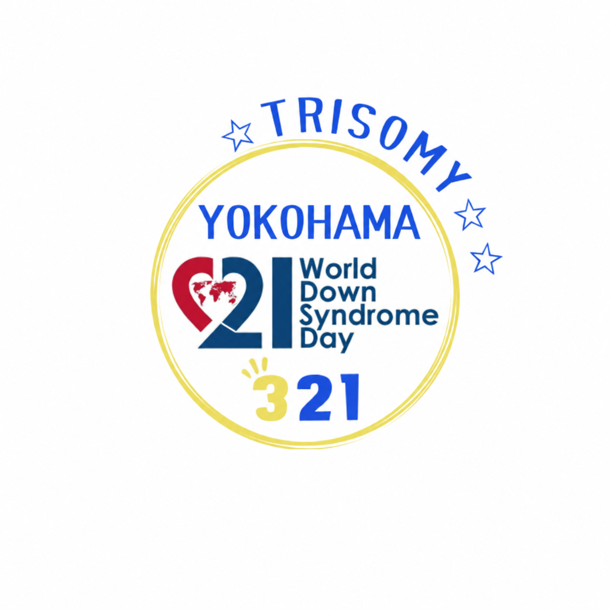

こころ揺さぶる劇場体験
劇団四季・宝塚歌劇団出身者を中心としたプロのパフォーマーが届ける、本格的な歌とダンスの舞台公演。
観るだけでなく、一緒に楽しめる参加型ステージも！
自分らしく楽しめる、特別な劇場体験です。
ダウン症のある子どもたち、一人ひとりに、まだ知らない可能性がある。
「好き」や「やってみたい」を大切に、自分らしい未来を、自分の手でひらいていこう。
世界ダウン症の日WAKUWAKUフェスタ 2027
申込開始：2027年1月1日（金）

3月21日は「世界ダウン症の日」。
WAKUWAKUフェスタは、ダウン症のある子どもたちとご家族が、音楽や舞台、ワークショップや交流を通して、自分らしく楽しめるイベントです。
声を出しても、踊っても、じっとしていられなくても大丈夫。
楽しみ方は、一人ひとり違っていていい。
一人ひとりの「好き」や「やってみたい」を大切にしながら、本格的な舞台公演やさまざまな体験を楽しめる一日。
心が動く瞬間や、新しい出会いが生まれる時間をお届けします。
劇団四季・宝塚歌劇団出身者を中心としたプロのパフォーマーが届ける、本格的な歌とダンスの舞台公演。
観るだけでなく、一緒に楽しめる参加型ステージも！
自分らしく楽しめる、特別な劇場体験です。
成人したダウン症のある先輩たちや、さまざまな活動をしている人たちとの出会い。
お話を聞いたり、交流したり。親子で楽しめるアート体験や、ハンドケアなどもできます。
あなたの「好き」や「夢」を、写真とメッセージに込めて。
応募した写真が、公演中の映像に登場！ 会場での写真展示もあります。
自分の「好き」や「夢」を見つめる、そんなきっかけにもなりますように。
病室も、病院の廊下も、体育館も。どこでも劇場になる！
心魂（こころだま）プロジェクトは、病気や障がいなど、さまざまな理由で劇場に行くことが難しい子どもたちやご家族のもとへ、本格的な舞台芸術を届けています。
今回のWAKUWAKUフェスタでは、ダウン症のある子どもたちとご家族に向けた特別公演を開催します。
音楽に合わせて体を動かしたり、思わず声が出たり、じっと舞台を見つめたり。
楽しみ方も、心の動き方も、一人ひとり違っていい。
周りを気にせず、自分らしく楽しめる場所で、本格的な舞台芸術に触れてみませんか。
事前申込が必要です
※定員に達し次第、申込締切
午前中は、さまざまな人や活動に出会える交流＆ワークショップの時間。
成人したダウン症のある先輩たちのお話を聞いたり、同じ想いを持つご家族と交流したり。
親子で楽しめるアート体験や、ハンドケアなどもあります。
気になるブースに立ち寄りながら、自分のペースで自由にお楽しみください。
10:30〜12:30｜2階 ラポールボックス
飲食や休憩にご利用いただけるテーブル席もご用意しています。
※飲食物の販売はありません。
ダウン症児ママの運営団体
ダウン症の子供達の「働く」を一緒に考えませんか？
ブースでは、フリマやママを癒すハンドケアを楽しみながら、先輩ママと気軽におしゃべりできます。ぜひ、遊びに来て下さい♪
パラサーファーとして大会で優勝、入賞しているShoくん。
サーフセラピー「うみがめくらぶ」のお友達とブースで待っています♪サーフィンが心身に与える効果についてもお話します♪
心臓病と向き合う親子によるワークショップ
「ゼンタングル」で親子コラボ作品をつくってみませんか？
ゼンタングルは多様なスタイルやアイデアを表現できます。リラックス効果もあり。
「みんなの夢」聞かせて💕
成人したわたしたちと夢を話そう。ブースでは「みんなの夢」が紹介されます。情報交換の場にもなっています。素敵な活動のチラシなども置いてます。
自分の好きなところ、これから叶えたい夢。
あなたらしい写真とメッセージを、ぜひ届けてください。
応募いただいた写真は、心魂プロジェクトの公演映像や、会場での写真展示などでご紹介します。
※写真・メッセージは、いずれか1点からでもご応募いただけます。
Q. 写真は、ダウン症のある本人だけが写っているものに限りますか？
いいえ。ダウン症のある方が写っていれば、お一人の写真でも、ご家族やお友だち・仲間と一緒の写真でもご応募いただけます。
応募締切2027年2月28日（日）
写真・メッセージを応募する「我が子に、もっといろいろな世界を見せてあげたい。」
「心が動くような体験を、たくさんさせてあげたい。」
そんな願いがあっても、思うように叶えられないことがあります。
音楽が大好き。踊ることも大好き。
でも、じっと座っていることが難しかったり、声が出てしまったり、あちこち動き回ったり。
劇場やイベントに連れて行きたくても、会場の環境やルールに合わせることが難しく、参加を諦めてしまう。
私自身、ダウン症のある子どもを育てる母親として、そんな経験をしてきた一人です。
だからこそ、実現したかったことがあります。
それは、ダウン症のある子どもたちが、ありのままの自分で、心から楽しめる本格的な舞台公演です。
周囲に気兼ねすることなく、その子らしい姿で音楽や踊りを楽しめる場所。
そして、ただ自由に過ごせるだけではなく、心が揺さぶられるような、本物の舞台芸術に出会ってほしい。
そんな願いから、今回のWAKUWAKUフェスタでは、ダウン症のある子どもたちとご家族に向けた心魂プロジェクト公演を、メインプログラムとして企画しました。
劇団四季・宝塚歌劇団出身者を中心としたプロのパフォーマーたちが届ける、本格的な歌とダンス。音響や照明が生み出す劇場空間。
その中で、心が動く体験に出会ってほしいと願っています。
以前、心魂プロジェクト公演を体験したご家族からは、思いがけないわが子の姿への驚きと喜びの声が届きました。
音や暗い場所が苦手だった子が、最後まで公演を楽しんでいた。
初めての場所に緊張していた子が、次第に目を輝かせていた。
普段は人前に出ない子が、自ら前に出て踊り始めた。
一つの体験を通して、本人も周囲も、まだ知らなかった可能性に出会う。
その体験が本人の自信や、周囲の新しい気づきとなり、次の「やってみたい」につながっていく。
もしかしたら、舞台で輝くプロのパフォーマーに憧れて、「自分もあんなふうになりたい！」と思う子がいるかもしれません。
そんな未来も、最初から閉ざしたくありません。
体験が、表現を生み、気づきが、新しい選択肢をひらいていく。
今回のWAKUWAKUフェスタでも、そんなきっかけをつくりたいと思っています。
そして、もう一つ大切な願いがあります。
それは、ダウン症のある子どもたちやご家族に、もっと自分自身を誇ってほしいということです。
私たちは、知らず知らずのうちに、周りと比べたり、社会の「普通」や「当たり前」に合わせようとしたりしています。
けれど、一人ひとり違っていて当たり前。
得意なことも、苦手なこともある。
できることも、できないこともある。
そのすべてを含めて、その人らしさです。それこそが宝物です。
誰かと同じようにできなくても、自分自身を誇っていい。
ありのままの自分に、100点満点をつけていい。
そして、どの子にも、まだ誰も知らない才能や可能性があるはずです。
その可能性を、今ある社会の枠組みだけで決めてしまいたくありません。
これからAIやロボットなどの技術が発展し、社会は大きく変わっていくでしょう。
そんな時代だからこそ、人が心で感じ、表現し、誰かと心を通わせることの豊かさや、挑戦したい気持ちを大切にしたいと思っています。
一人ひとりの「好き」や「やってみたい」から、新しい生き方や選択肢が生まれていく。
そして、自分らしく生きる姿が、いつか社会の「当たり前」を変えていくかもしれません。
WAKUWAKUフェスタでは、心魂プロジェクト公演のほかにも、ワークショップや交流、写真やメッセージを通じて、一人ひとりが自分らしく参加できる機会をつくります。
特別なことができなくてもいい。
何かを表現しなければいけないわけでもありません。
ただそこにいて、楽しんで、誰かと出会う。
そんな時間も、かけがえのない体験です。
この日が、子どもたちにも、ご家族や支援者の皆さまにも、新しい発見と喜びに出会える一日になりますように。
そして、帰るときには、少しだけ自分のことが誇らしくなり、これからの未来が楽しみになっていたら嬉しいです。
世界ダウン症の日を広めよう in Yokohama 実行委員会
ありのままの自分に、
100点満点を。
WAKUWAKUフェスタは、ダウン症のある子どもたちとご家族に、本格的な舞台芸術やさまざまな体験を無料で届けるイベントです。
心が動く体験が、新しい「好き」や「やってみたい」に出会うきっかけになるかもしれません。
子どもたちが自分らしい未来をひらいていく、その一歩となる体験を、皆さまと一緒に支えていけたら嬉しいです。
WAKUWAKUフェスタでは、一人ひとりのペースや楽しみ方を大切にしています。
午前中のワークショップは、自由に入退場していただけます。
午後の公演では、椅子に座るのが難しい方も過ごしやすいよう、マット席をご用意しています。
車いすやベビーカーをご利用の方も、ご参加いただけます。
初めての場所やイベントへの参加に不安がある方は、お気軽にお問い合わせください。
午前中のワークショップ会場「2階 ラポールボックス」では、飲食が可能です。飲食や休憩にご利用いただけるテーブル席もご用意しています。
ただし、飲食物の販売はありませんので、必要な方はご持参ください。
午後の公演会場「1階 ラポールシアター」内では飲食できません。飲食の際は、ホワイエなど、飲食が認められている場所をご利用ください。
自分らしく楽しむこと。
新しい可能性に出会うこと。
誰かの「やってみたい」を応援すること。
その一つひとつが、未来をつくる力になる。
2027年3月21日。